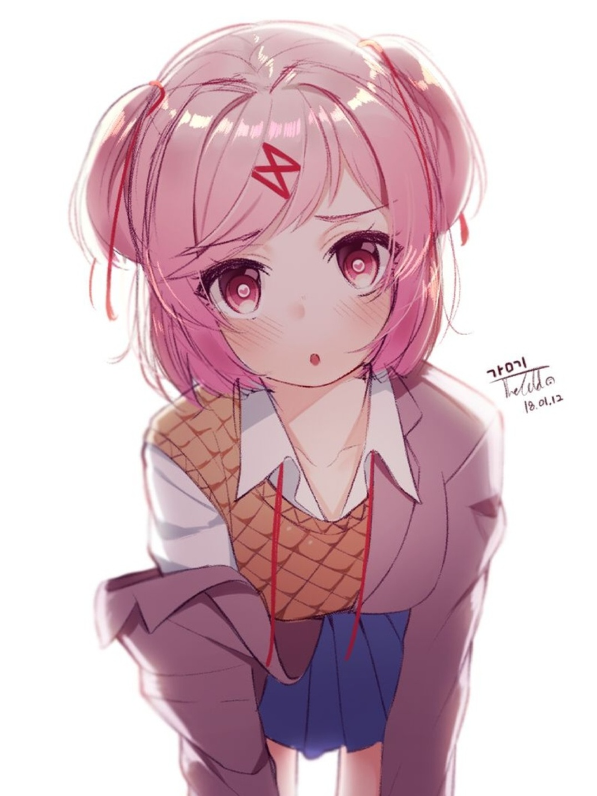
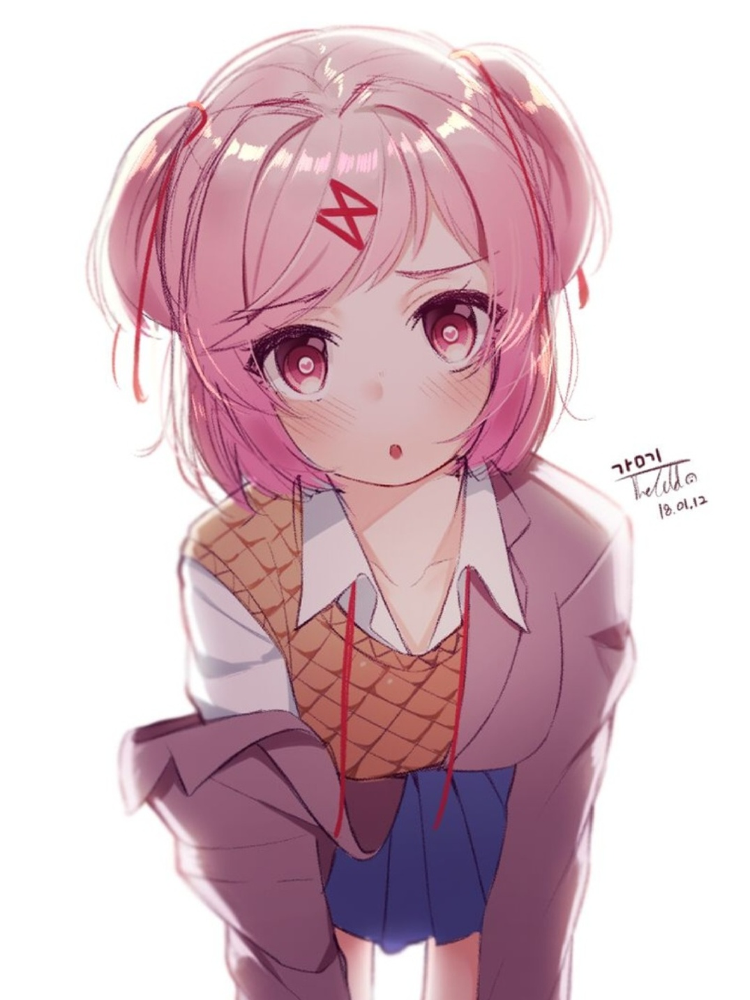
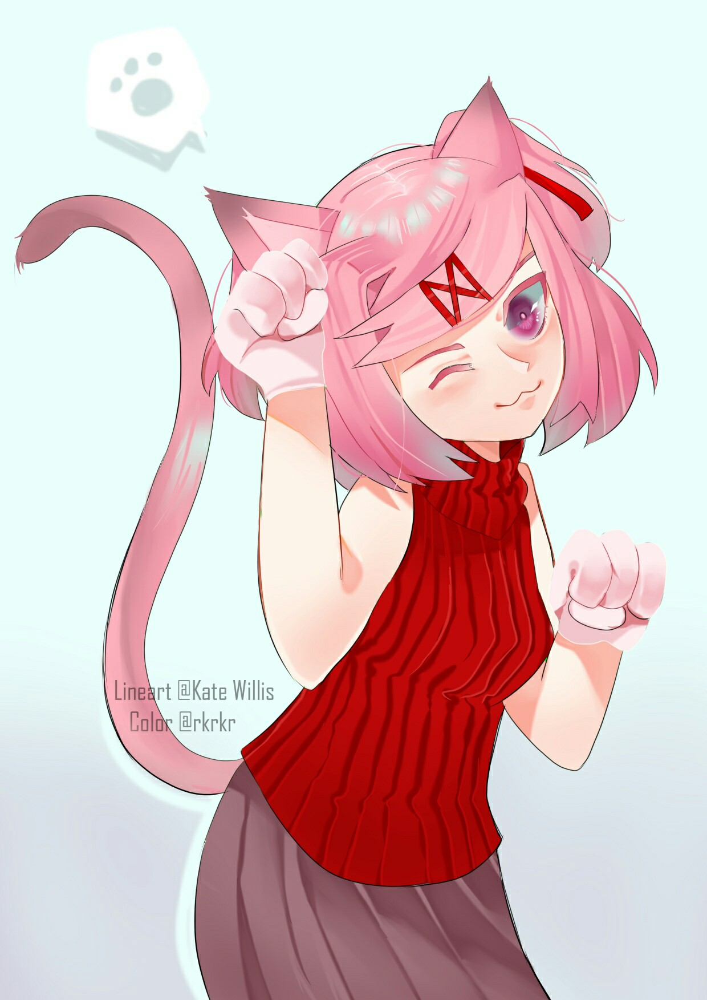
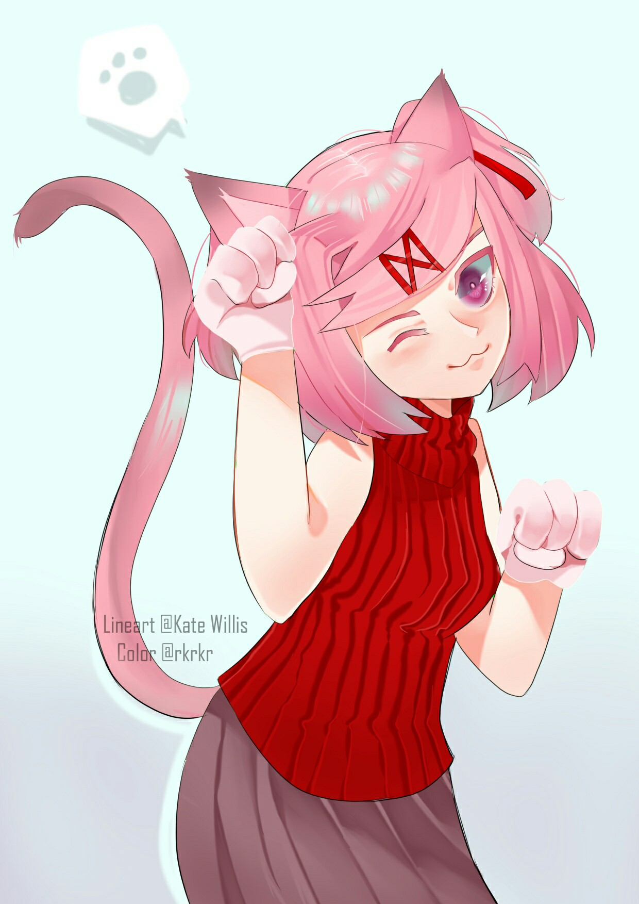
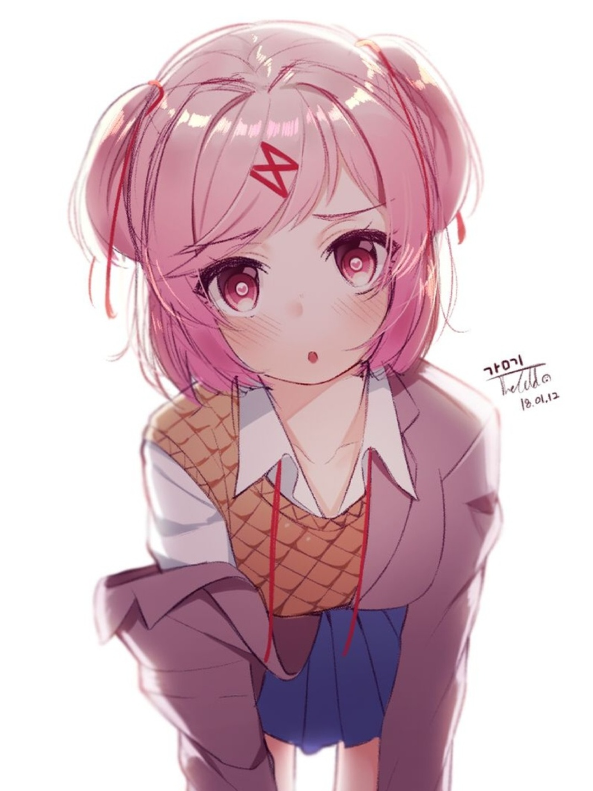
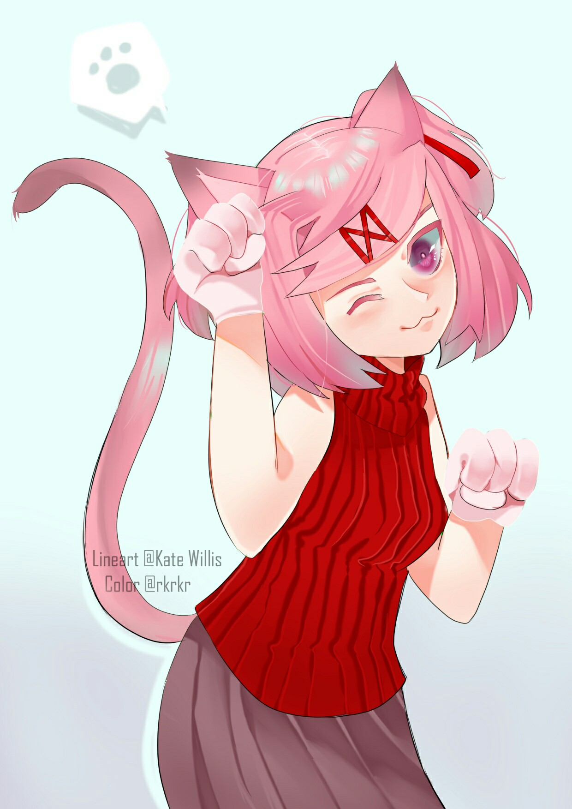

 


Нацуки (англ. Natsuki) (яп. なつき, ナツキ — лето, редкая) — одна из четырех главных героинь в игре DDLC. Член Литературного Клуба и одна из трех персонажей, которым вы можете писать стихи.
Милая цундере, немного грубая девушка, но это лишь обложка.
И да, она не любит, когда ее называют милой, поэтому давайте забудем этот эпитет в ее сторону).
Нацуки любит мангу, особенно "Ванильные девушки".
К сожалению ее отец строгий и не разрешает розоволосой красавице читать мангу; нашей героине приходится хранить и читать ее в клубе.
В данной манге часто упоминается готовка, чем наша любимая Нацуки увлекается.
Девушка заботится и любит своих друзей, хоть это и скрывает.
Если понаблюдать за ее поведением, то можно заметить, что Нацуки нуждается в ласке и заботе).
Да и вообще она офигенная девчонка.
К сожалению, разработчику не занесли бабла, поэтому, можете не подписываться!
(Тем более, паблик мертв)

